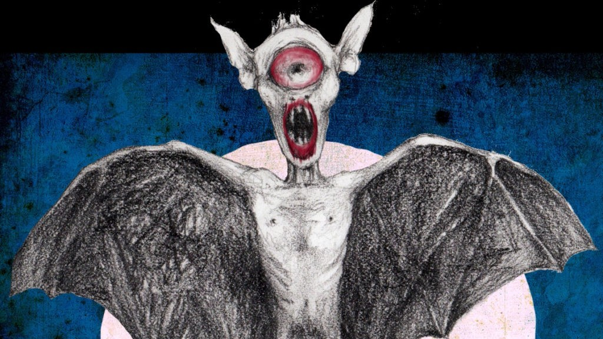
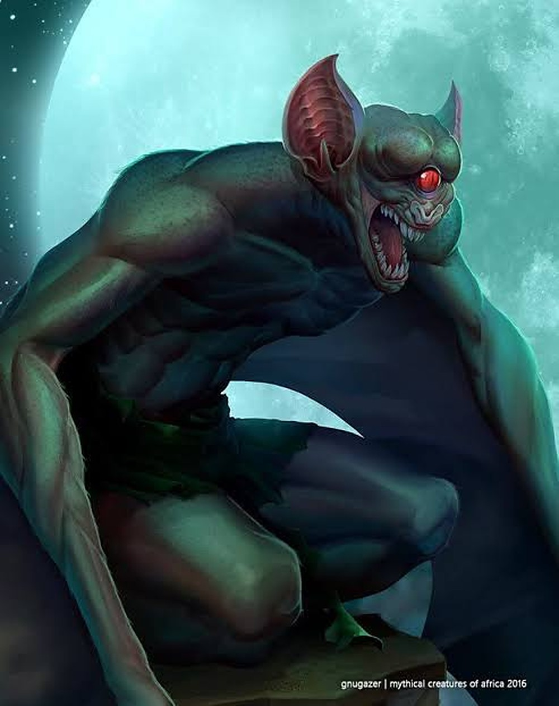
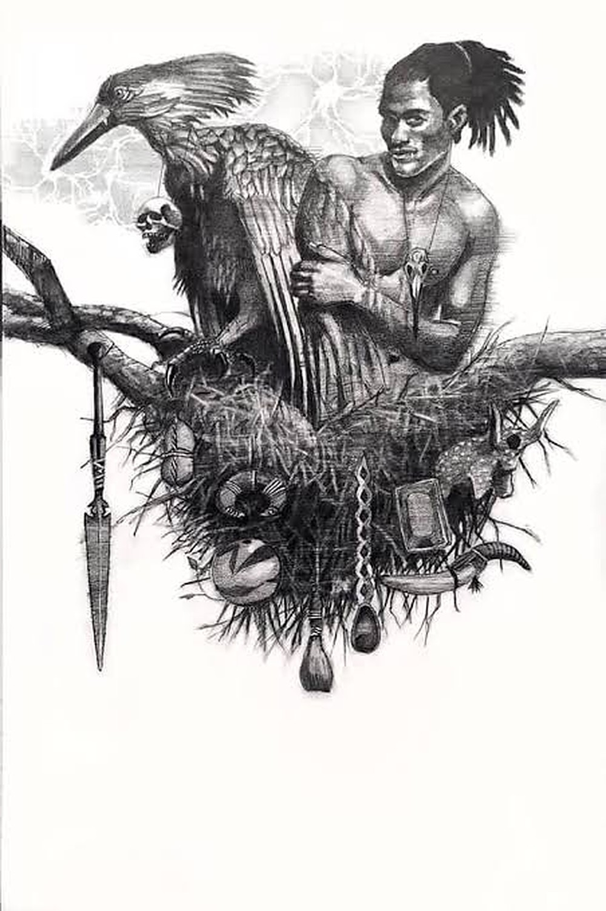

Africa had its own monsters first
Before pumpkins and plastic fangs, there was the two-mouthed irimu, the bat-wing of Zanzibar and the lightning bird. A Halloween guide to the creatures that kept generations indoors after dark.
Halloween came to Nairobi through club nights and costume parties. But the idea underneath it, that the dark is full of things that want you, never needed importing. Every corner of this continent already had its monsters, and most of us met them at bedtime, from someone who loved us and wanted us home before dark.
Central KenyaThe ogre with two mouths
In Gĩkũyũ folktales, the irimu is an ogre with an ordinary, friendly mouth at the front and a second, hungry mouth at the back of its head, hidden under its hair. The detail was the lesson: beware the charmer whose smile hides an appetite. In many Kenyan ogre tales the monster swallows whole communities, until a brother and sister bring it down.
The irimu has relatives right across the region, including the Kamba eimu and the Swahili zimwi. The zimwi still lives on in everyday Swahili, in the proverb zimwi likujualo halikuli likakwisha: a monster that knows you won't finish you off.
ZanzibarThe bat-wing

Popobawa is Swahili for “bat-wing”, from popo (bat) and bawa (wing). It's a shape-shifting shetani, an evil spirit, said to have first appeared on Pemba Island. The name is said to describe the dark shadow it casts when it attacks at night, not its actual form, which is believed to change.
Waves of panic about the Popobawa have swept Pemba and Unguja more than once. Its most famous rule is also its strangest: deny that it exists and you're inviting a visit. So people talk about it, openly.

Southern AfricaThe invisible one
In Zulu, Xhosa and Sotho folklore, the tokoloshe is a small, dwarf-like water sprite that can make itself invisible by drinking water or swallowing a stone. It gets the blame for illness, bad luck and things that go strangely wrong in a home, and it's usually believed to have been sent by someone who wishes you harm. That makes the tokoloshe as much a story about jealousy as about the supernatural.
Southern AfricaThe lightning bird

The impundulu turns up in Zulu, Xhosa and Mpondo stories as a black-and-white bird the size of a person, whose wings and talons call down thunder and lightning. It's feared as a witch's familiar with a taste for blood. And in some communities, the hammerkop, a very real brown bird found across much of Africa, is believed to be the lightning bird itself.
West AfricaThe one in the trees
The Sasabonsam (sometimes Asanbosam) belongs to the Akan of southern Ghana, Côte d'Ivoire and Togo. It has iron teeth, lives high in the forest canopy and dangles its long legs to snag hunters walking underneath. Like many forest spirits, it doubled as a warning: don't wander into the bush alone.
Marlon James gave it a new life in his 2019 fantasy novel Black Leopard, Red Wolf, where Asanbosam and Sasabonsam appear as monstrous brothers.
Across the continentThe water queen
Mami Wata is known in West, Central, East and Southern Africa, and across the diaspora, as a water spirit who can bring wealth and just as easily take it away. In Central Africa she has a counterpart called Mamba Muntu.
Where she comes from is one of folklore's great debates. Art historian Henry John Drewal traces her familiar image to Africans' first encounters with Europeans and their mermaid pictures in the 15th century. Others point out that the continent had many water-spirit traditions long before any ships arrived. Her most famous look, a woman with a snake around her shoulders, came from a 19th-century print of a snake charmer made in Hamburg, Germany, which was copied and reworked across West Africa until it became Mami Wata.
So why did they last?More than monsters
None of these creatures was invented only to frighten. The ogre stories taught children to be careful with strangers who talk sweet. The forest spirits kept hunters careful. The water spirits carried lessons about desire and its price. Halloween might be a borrowed holiday, but the instinct behind it has deep roots here.
Which one did you grow up hearing about? Tell us on Instagram, @flavor.africacorp.
Sources
- Wikipedia: Popobawa
- Urban Legends, Mystery & Myth: Popobawa
- Gods and Monsters: Tokoloshe
- Oriire: Tokoloshe
- Dictionary of South African English: impundulu
- Citizen: Five African mythological creatures (Impundulu)
- Wikipedia: Sasabonsam
- Asafo Flags: Sasabonsam
- Wikipedia: Mami Wata
- Horniman Museum: framed Mami Wata print
- SAS Publishers: Ogre symbolism in Gĩkũyũ narratives
- University of Pennsylvania: Kenyan folklore
- Boston University: the ogre in African narrative
- Daily News (Tanzania): Zimwi likujualo halikuli likakwisha